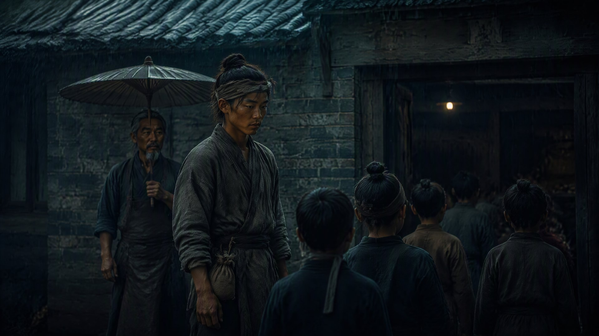

灶火不熄

义学开学那天，百曲下了入秋的第一场雨。
火焱站在新起的学堂门口。三间青砖瓦房，是赤伯升带着铁匠们一砖一瓦盖起来的——用的料，是从火锻炉里退下来的旧砖。学堂正门上方挂着一块匾，匾上八个字：灶田义学，耕读传家。是朱元璋的手书，朱砂已经渗进木头里。
“请了先生没有？”海妹站在火焱身后，撑着伞，身后跟着两个半大的孩子——她的孙子，和陈老爹的孙女儿。
“请了。”火焱说，“松江城一个姓冯的老秀才。开蒙，先教《三字经》，再教《千字文》，往后有出息的，再往县学里送。”
“姓冯？”海妹一愣，“不会是……”
“冯参将的族叔。”火焱说，“冯参将卸了甲，回松江养老，把他族叔荐了来。”
雨下得不急，落在青瓦上沙沙地响。开蒙的第一天，来了二十三个孩子，都是百曲灶户和火锻铁匠家的娃娃。最大的十二，最小的才五岁。火焱一个一个看过去，有几个孩子的手上还沾着灶灰，指缝黑黑的，跟当年他自己一模一样。
“我爷爷说，读书识字，往后就不用只烧灶了。”一个孩子怯生生地说。
火焱蹲下来，看着他：“你爷爷说得对。可烧灶的本事，也不能丢。灶上能烧出盐，烧出铁，烧出布——烧不出的，是书里的道理。两个都要会。”
赤伯升站在人群最后面，没有进来。他老了，头发全白，背也驼了。他一个人站在雨里，看着那块匾，看着学堂里念书的孩子，浑浊的老眼里慢慢蓄了泪。他这一辈子，从松江盐运司的书吏，到逃亡路上的父亲，到百曲铁匠炉的老师傅——他从来没进过学堂。他认得的字，是在盐运司给人抄册子的时候，一笔一笔偷着学的。
“爹。”火焱走过去，把伞递给他，“进去坐。”
“不了。”赤伯升摇摇头，“我身上有火灰，别弄脏了学堂。”他顿了顿，忽然笑了，“焱儿，你说，你爷爷那一辈，做梦也想不到，火家能有一间学堂吧？”
“想不到。”
“我也想不到。”赤伯升说，声音很轻，“我这一辈子，就做对了一件事——那年从松江城逃出来的时候，没把你扔下。”
父子俩站在雨里，谁也没再说话。学堂里，传来孩子们稚嫩的读书声，一个字一个字地往外蹦：“人之初，性本善……”
日子一天天过。火家的水师，开始一艘一艘地卸兵器。火锻炉里淬出来的箭头，不再是往军营里送，而是回炉打成犁头、打成锅铲、打成船钉。军器司的铜符还挂在灶火号正堂，可底下压着的那一纸“火家海路只走商不走兵”的诰命，比铜符更重。海妹盘账的时候跟火焱说，今年火家的进项少了两成——少的是军器的利，多的是安心。
“少两成，多一条后路，值。”火焱说。
只有一件事，火焱一直悬在心里。他没有跟任何人讲。朱元璋登基那天，他在应天府的城墙上，看着那个从淮西走出来的男人受了百官朝贺。他知道，眼前这个新朝，往后会越来越不一样——他研究过元史，也研究过明朝的开国。洪武一朝，功臣能善终的，没有几个。火家求的那“三样”，不是现在求的，是替十年后、二十年后求的。
这天夜里，火焱把海妹、陈老爹、赤老温，还有已经能独当一面的几个年轻后生，叫到灶火号的正堂。桌上摊着直脱儿的海图，摊着火家的账本，摊着那张“耕读传家”的诰命。
“从明天起，”火焱说，“火家做三件事。第一，海路收一半——只留走商最稳的几条航线，把船卖一部分，银子换成田。第二，铁匠炉改行——军器停了大半，只留火锻灶具和农具。第三，”他顿了顿，“义学扩到十二个村，往后百曲一带的孩子，都来念书。”
“大郎，”海妹第一个急了，“你这是要把火家往外散？”
“不是散。”火焱说，“是把根往下扎。”他指了指那张海图，“直脱儿公留这张图，不是让火家永远跑海的。是让火家在乱世里活下来。如今乱世过去了，火家要活的，不是再打多少船、铸多少箭——是让火家的孩子，能坐在学堂里念书，不用再去刀口下改姓。”
正堂里静了下来。赤老温抱着那根半焦的柴，忽然说了一句：“草原上的老话——火要是烧得太大，风一来，就灭了。要留着火，得把柴拢紧些。”
火焱看着他，点了点头。
灶膛里的火，赤红赤红地跳着。那团火，从松江城的破灶房，烧到百曲的灶火号，烧到扬州、杭州、镇江、泉州、漠北——烧遍了半个天下。如今，它要往回烧了。烧回那口最普通的灶里，烧进灶田里，烧进义学的书声里。
不是熄了。是收拢了。
直脱儿匾上的“灶火为证，方可归汉”还挂着。旁边的墙上，海妹亲手挂上了另一块匾——朱元璋手书的“灶田义学，耕读传家”。
两块匾，隔着一道门槛，一左一右。一块是过去，一块是将来。中间，是一口烧了一辈子也没熄过的灶。
火，还在烧。
· 第四卷《焚天》 ·